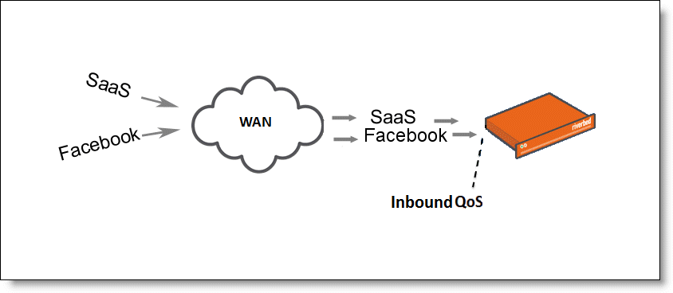
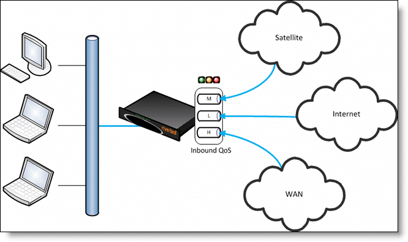

RiOS v7.0.1 and later supports inbound QoS. You configure inbound QoS in the Configure > Networking > Inbound QoS page.Inbound QoS allocates bandwidth and prioritizes traffic flowing into the LAN network behind the Steelhead appliance. This provides the benefits of QoS for environments that cannot meet their QoS requirements with outbound QoS.A deployment that does not have a Steelhead appliance located at the traffic source (for example, the traffic comes from the Internet, or from servers at a site without a Steelhead appliance). Figure 6‑7. Guarantee Bandwidth for Incoming TrafficA deployment that has multiple Steelhead appliances located at the traffic source (for example, behind an Interceptor cluster). The Steelhead appliances do not share bandwidth information with each other. As a result, they can overwhelm the branch office site at the remote location. A branch office receiving data from multiple data centers (either with or without Steelhead appliances). Because the two data centers do not coordinate the amount of bandwidth sent to the branch office, they can overwhelm the link at the branch office, causing degraded performance. Configuring inbound QoS focusses on prioritizing types of traffic using rules and classes just like outbound QoS. The inbound configuration is separate from the outbound configuration. You define the applications on the local network and then create their corresponding shaping policies.Figure 6‑10. Inbound QoS Overview Inbound QoS applies the HFSC shaping policies to the ingress traffic. This addresses environments in which bandwidth constraints exist at the downstream location. When this occurs, the downstream Steelhead appliance (where inbound QoS is enabled) dynamically communicates the bandwidth constraints to the client transmitting the traffic. The client slows down the throughput and the traffic adheres to the configured inbound QoS rule. Inbound QoS, just like outbound QoS, is not a dual-ended Steelhead appliance solution. A single Steelhead appliance performing traffic shaping as needed to avoid network congestion controls inbound WAN traffic on its own.For details about the HFSC queuing technology, see Traffic Classification and the Steelhead Appliance Deployment Guide.Inbound rules define the types of traffic flowing into the branch office. As with outbound QoS, the rule can match the traffic based on VLAN, IP header values, TCP/UDP ports, and AFE information. As an example, you can ensure that the voice traffic on the WAN is reserved a fixed bandwidth and this traffic has a higher priority over the recreational Internet traffic.Inbound classes shape the inbound traffic. The class configuration resembles a flat outbound QoS class configuration. An outbound QoS configuration describes remote sites and services/applications. Inbound QoS describes the local services/applications and how to shape the inbound traffic.The inbound traffic shaping configuration includes a default shaping class. The QoS scheduler applies the built-in inbound default class constraints and parameters on traffic not placed in any other class by the configured QoS rules. The default shaping class has a 10 percent minimum bandwidth allocation and a 100 percent maximum bandwidth allocation. You cannot delete the default class; however, you can change its bandwidth allocations.Unlike Outbound QoS (Advanced), inbound QoS does not support hierarchical mode; it uses flat mode only. A deployment using inbound QoS will typically not require a hierarchical configuration to support multiple sites across the WAN. Deployment scenarios include configuring hierarchical mode using outbound QoS in the data center and configuring inbound QoS in the branch offices. Inbound QoS does not classify and shape traffic received from a peer Steelhead appliance when using the connection forwarding feature. In these configurations, the Steelhead appliance that first intercepts the traffic classifies and shapes it. Inbound QoS is not fully compatible with RSP when one or more virtual machines are connected to the in-path data flow. In such scenarios all traffic that enters any Virtual Machine connected to the in-path data flow falls into the default class. When packet-mode optimization is enabled, the QoS scheduler places UDP4 traffic into the MX-TCP class. All other traffic goes into the proper class. You cannot configure inbound QoS in an out-of-path deployment over a primary or auxiliary interface. Inbound QoS does not throttle certain flows such as MX-TCP and UDP bulk traffic flows; however it does provide bandwidth and latency reservation for them. The maximum number of inbound QoS rules is 500. The maximum number of inbound QoS classes is 200. The inbound QoS connection classification limit depends on the Steelhead appliance model. When the number of optimized connections exceed the connection classification limit for the appliance model, all new connections are passed through unoptimized. This table lists the limits.
Real-Time - Specifies real-time traffic class. Give this value to your highest priority traffic; for example, VoIP, video conferencing. Interactive - Specifies an interactive traffic class: for example, Citrix, RDP, telnet and ssh. Business Critical - Specifies the high priority traffic class: for example, Thick Client Applications, ERPs, and CRMs. Normal Priority - Specifies a normal priority traffic class: for example, Internet browsing, file sharing, and email. Low Priority - Specifies a low priority traffic class for all traffic that does not fall into any other service class: for example, FTP, backup, replication, other high-throughput data transfers, and recreational applications such as audio file sharing. Best Effort - Specifies the lowest priority. These are minimum priority guarantees; if better service is available, it is provided: for example, if a class is specified as low priority and the higher priority classes are not active, then the low priority class receives the highest possible available priority for the current traffic conditions. This parameter controls the priority of the class relative to the other classes.Important: The latency priority describes only the delay sensitivity of a class, not how much bandwidth it is allocated, nor how important the traffic is compared to other classes. Typically, you configure low latency priority for high-throughput, nonpacket delay sensitive applications like FTP, backup, and replication.
Configuring Port Labels Managing Configuration Files Viewing Inbound QoS Reports
|
|